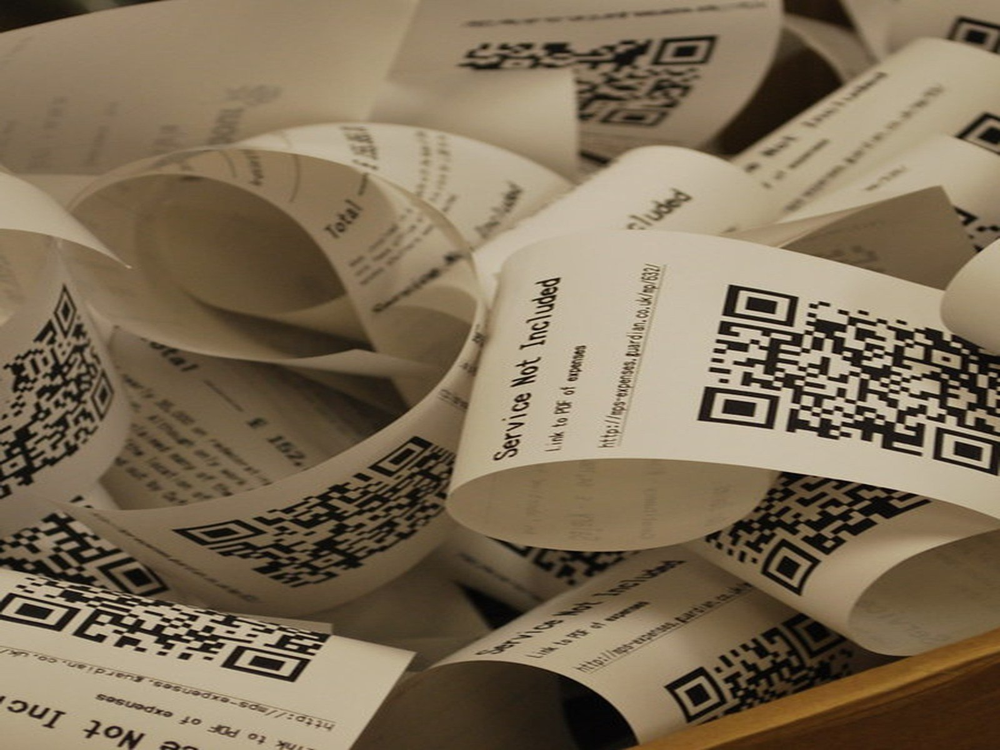

Free, unlimited, no signup. Conversion runs entirely in your browser — files never leave your device.
How it works
Drag in photos or scans. Add as many as you like.
Reorder pages, pick a page size and margins.
One click. The file is created on your device, not a server.
Privacy
Most converters ask you to upload your images to their servers. SnapPDF never sees a single file. The conversion code runs on your device — the same place your images already are.

What you get
Convert dozens of images at once and set the page order before you export.
A4, Letter or exact-fit pages, portrait or landscape, with or without margins.
No task counters, no signup walls, no watermarks, no "pro" tier.
Once the page loads, you can go off the internet and it still works.
FAQ
No. All conversion runs in your browser using JavaScript on your device. There is no server that receives your files — you can even disconnect after the page loads.
Yes. There's no account, no daily limit and no paid tier.
JPG, PNG, WebP and GIF. Most phone photos and scans work out of the box.
No fixed limit. Very large batches depend on your device's memory — most laptops handle hundreds of pages easily.
Yes — everything you add becomes one PDF, in the order you set.